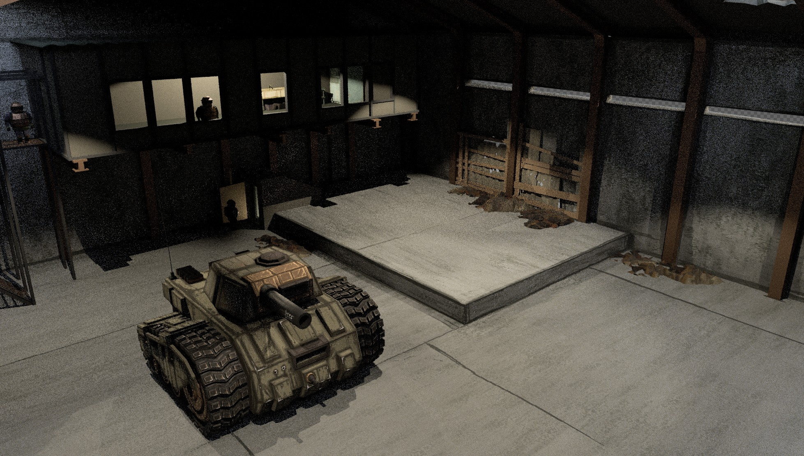

Project Mars
Team up with your friends to reach the island's extraction point while avoiding the horrors that dwell on it. Operate and maintain your tanks, radio to your teammates, blast the monsters that hunt you down, and try to make it to the next safe building in this comedic horror extraction game WITH TANKS!
Project Mars is a game developed by Trash Planet Games, a team of 3 developers. I serve as the Engineer for the team, and I am responsible for the development of the game's systems and mechanics. Learning multiplayer for Project Mars has been an exciting but difficult experience. I have learned a lot about how to make a game multiplayer, and I have learned a lot about how to make a game fun. It is still early in development, but I am excited to see where it goes and what we can do with it. Trash Planet Games has big plans for Project Mars and I can't wait to officially announce the game.
Aspiring game developers often get the reputation of never finishing their projects. I have fallen into this camp too at times, but I am more confident in Trash Planet and Project Mars than I have been with any other project I've worked on.